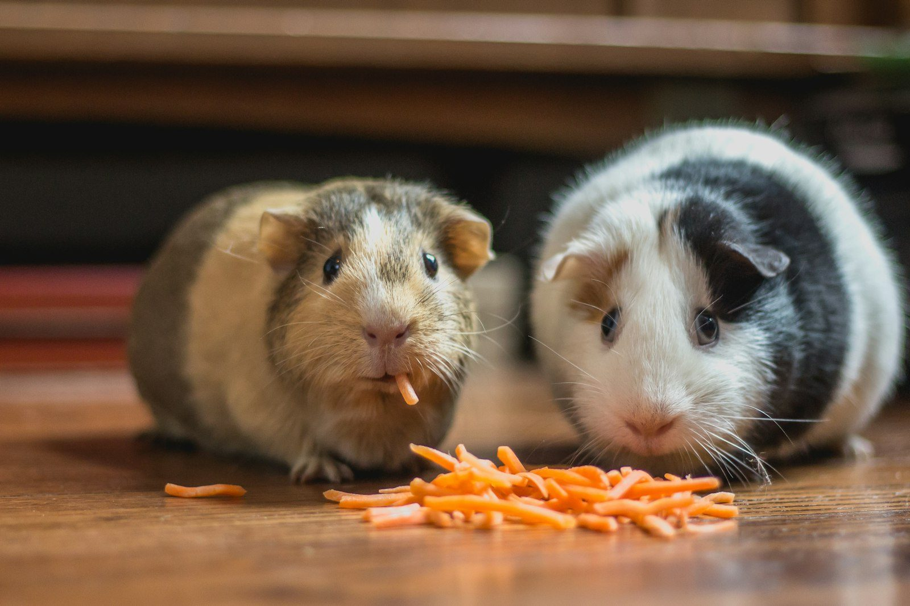

Valle de Aragón 3ª sección, C.P. 55280. Lunes a sábado de 10:00 a 19:00; domingo cerrado, según Google.
Agendar por WhatsApp55 9038 9082No hay un tarifario oficial publicado. Estos son servicios habituales de una clínica veterinaria; confirma disponibilidad al llamar.
Revisión y seguimiento de perros y gatos. Consulta para confirmar disponibilidad.
Medicina preventiva. Pregunta el esquema al agendar.
Baño y corte, según agenda. Confirma al llamar.
Procedimientos quirúrgicos, según disponibilidad.

Google y Andymap ubican la clínica en Valle de Senegal 57, Valle de Aragón 3ª sección, C.P. 55280. Algunos directorios más antiguos escriben «Av. Valle del Júcar #57»; aquí se usa la dirección de la ficha de Google. Confirma la calle al llegar.
Directorios (Andymap, Directmap) publican el teléfono 55 9038 9082; esa ficha de Google consultada no traía el número en el extracto. Confirma al marcar. El dominio ceavet.com aparece listado en directorios, pero en esta ronda no se pudo verificar como un sitio oficial en funcionamiento (la petición no devolvió una página con el contenido del negocio). Esta página es un mockup, no ese dominio.
✔ Domingo cerrado, según Google
✔ Tel. 55 9038 9082 (directorios; confirma al marcar)
Calificación 4.8 ★ en Google
★★★★★
“Muy buenos doctores, es accesible, la atención y las instalaciones son muy buenas, sin duda lo recomiendo bastante”
★★★★★
“El Dr Alejandro es una dulzura con los animalitos..... Muy acertado en sus diagnósticos, explica todo a detalle y da un buen seguimiento. Yo lo recomiendo ampliamente.”
★★★★★
“Excelente veterinaria, el Dr. Alejandro es un gran profesional, medico honesto y empírico con los clientes, muchas gracias Alex.”
★☆☆☆☆
“Muy mal lugar hoy lleve a mi perro a su baño y a corte de pelo lo estresaron tanto que le reventaron los vacitos de su ojo lo tiene súper rojo, y aparte me dan según ellos el medicamento para desinflamar y me lo dan usado y todo sucio adjunto fotos de verdad no lleven a sus mascotas a ese lugar”
Datos de contacto, horario y ubicación.
Directorios listan http://www.ceavet.com/. En esta ronda no se pudo confirmar que esa dirección cargue con el contenido de esta clínica. Esta página es un mockup y no usa ese dominio.
Según Google: lunes a sábado de 10:00 a 19:00; domingo cerrado.
Valle de Senegal 57, Valle de Aragón 3ª sección, C.P. 55280, Ecatepec, según Google y Andymap. Algunos directorios escribieron Valle del Júcar 57; confirma la calle al ir.
El 55 9038 9082 aparece en directorios (Andymap y Directmap). Confirma el número al marcar, porque no venía en el extracto de la ficha de Google consultada.
La ficha consultada muestra 4.8 de 5 a partir de 106 opiniones. La hoja del proyecto tenía 127.
📍 Dirección: Valle de Senegal 57, Valle de Aragón 3ª sección, 55280 Ecatepec de Morelos, Méx.
📞 Teléfono: 55 9038 9082
| Lunes a sábado | 10:00 – 19:00 |
| Domingo | Cerrado |
El teléfono 55 9038 9082 aparece en directorios. Confirma horario y disponibilidad al marcar.
Agendar por WhatsApp